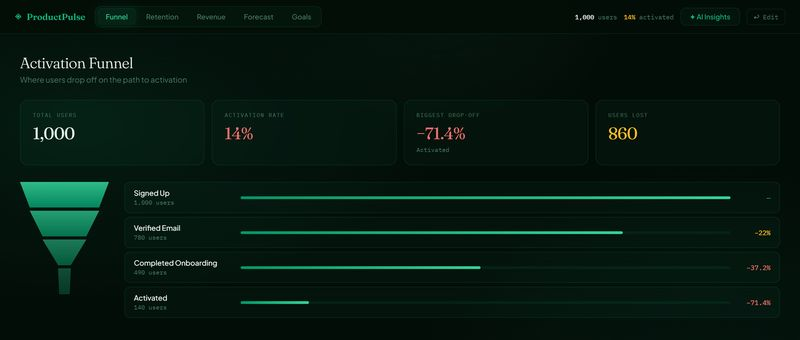
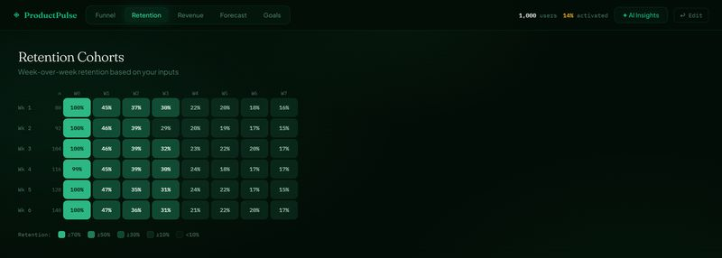
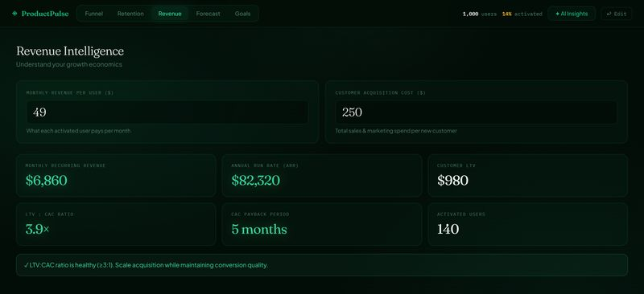
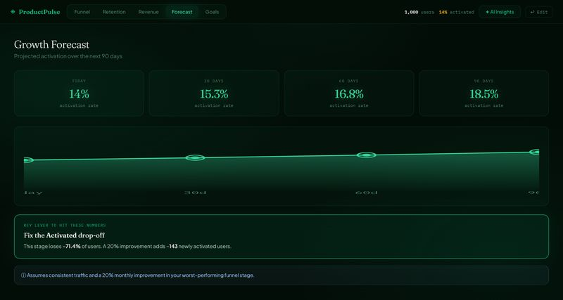
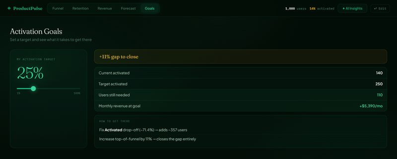

ProductPulse
Product analytics · Full stack
Find where a product funnel breaks, and what fixing it is worth.

- Role
- Solo builder: product, analytics, full stack
- When
- 2026
- Stack
- React 18, FastAPI, Pandas, Claude API
- Users
- Early-stage product teams
Results
Small product teams know activation matters. What they don't have is an analytics stack that shows where users drop off and what fixing it is worth.
- No data exports or analytics platform
- Drop-off tied directly to revenue
- A clear next action, not just charts
How I built it.
- 01
Map the funnel
You enter stages and counts. Pandas works out drop-off and conversion at each step.
- 02
Model retention
Two inputs, week 1 and week 4 retention, become an 8-week cohort heatmap.
- 03
Price the impact
Add MRR per user and CAC, and you get ARR, LTV, LTV:CAC and payback period.
- 04
Forecast
It projects activation at 30, 60 and 90 days and names the one fix that moves it most.
- 05
Set a goal
Drag a slider to a target activation rate. It shows the user gap and the revenue on the table.
- 06
Ask the AI
Claude scores activation health from 0 to 100, suggests 3 growth levers and takes follow-up questions.
Under the hood.
Inside the product.
Click any image to enlarge.




What I learned
- Retention here is interpolated from two inputs. It's fine for direction, but I wouldn't use it where you need event data.
What's next
- I'll stream the AI responses and tidy up the layout on small screens.
Screens show the app's built-in sample funnel (1,000 sign-ups).